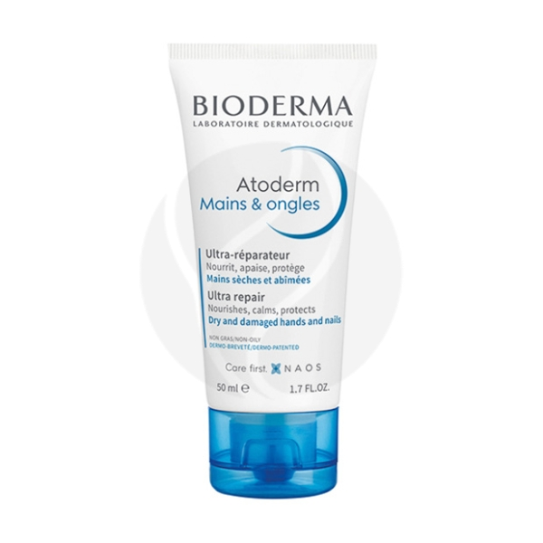

| Названия | Состав | Цена | Внешний вид |
|---|---|---|---|
| 1065 | AQUA/WATER/EAU, GLYCERIN, ALUMINUM STARCH OCTENYLSUCCINATE, ISONONYL ISONONANOATE, BUTYROSPERMUM PARKII (SHEA) BUTTER EXTRACT, PALMITIC ACID, STEARIC AC I D , S O R B I TAN STEARAT E , AMMONIUM ACRYLOYLDIMETHYLTAURATE/VP COPOLYMER, PENTYLENE GLYCOL, 1,2-HEXANEDIOL, CAPRYLYL GLYCOL, FRAGRANCE (PARFUM), DISODIUM EDTA, MANNITOL, XYLITOL, RHAMNOSE, SODIUM HYDROXIDE, NIACINAMIDE, POLYQUATERNIUM-51. [BI 707]. | Bioderma Atoderm Легкий увлажняющий крем для рук и ногтей, 50мл |  |
| 1735 | Aqua/Water, Butyrospermum Parkii Butter/Shea Butter, Glycerin, Dimethicone, Niacinamide, Cetearyl Alcohol, Brassica Campestris Seed Oil/Rapeseed Seed Oil, Glyceryl Stearate, Ammonium Polyacryloyldimethyl Taurate, Peg-100 Stearate, Propanediol, Ophiopogon Japonicus Root Extract, Peg-20 Methyl Glucose Sesquistearate, Sorbitan Tristearate, Dimethiconol, Sodium Chloride, Mannose, Coco-Betaine, Disodium Edta, Capryloyl Glycine, Caprylyl Glycol, Vitreoscilla Ferment, Citric Acid, Maltodextrin, Xanthan Gum, Tocopherol, Pentaerythrityl Tetra-Di-T-Butyl Hydroxyhydrocinnamate. (CODE F.I.L.:B237057/1) | La Roche-Posay Lipikar Baume AP+M Липидовосполняющий бальзам, 400мл | |
| 434 | Вода деминерализованная, Липодерм (моностеарат глицерина, стеариловый спирт, цетиловый спирт, стеарат диэтиленгликоля, стеарат ПЭГ-400, полисорбат-20, ПЭГ-40 гидрогенизированное касторовое масло, дипропиленгликоль), изопропилпальмитат, масло соевое, каприлик/каприк/триглицериды, глицерин, гидролизат крахмала, феноксиэтанол и этилгексилглицерин, витамин Е, альфа-бисаболол, горофит шелковицы, горофит бархата амурского, витамин А, карбопол, триэтаноламин, парфюмерная композиция. | Librederm Vitamins Aevit крем для рук питательный, 125мл |